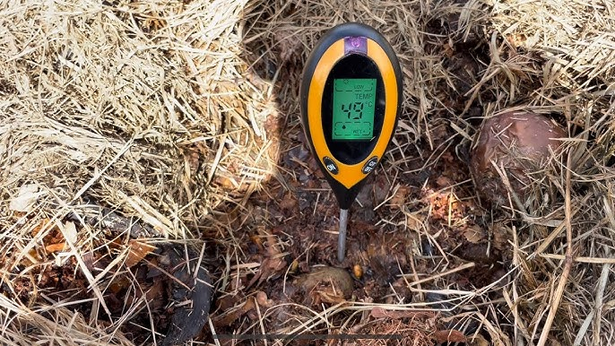
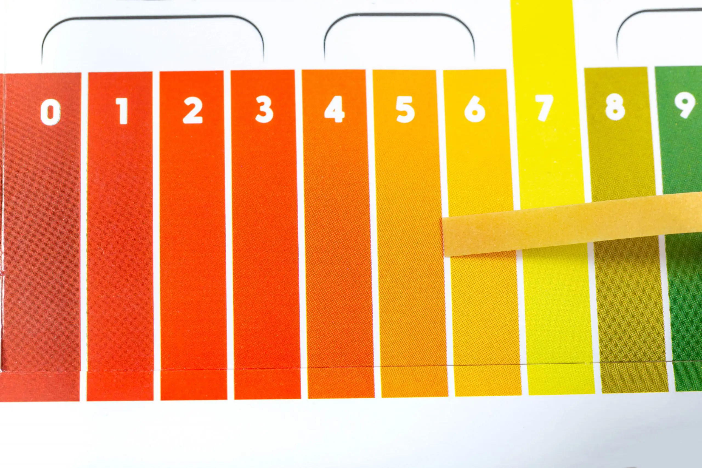
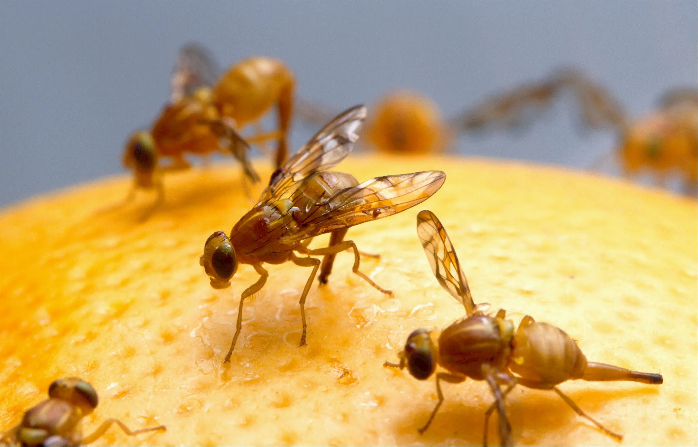
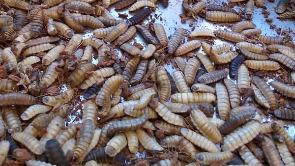

Aderir a um sistema de compostagem em casa, comprando uma composteira doméstica, é barato e fácil, porém elas necessitam de cuidados com sua manutenção. Desse modo, os resíduos orgânicos podem ser reciclados e transformados em adubo. Acompanhe a seguir alguns passos de como resolver certos problemas com sua composteira.
alguns problemas na composteira:
link: Vários problemas na compostagem doméstica?
No caso da vermicompostagem, o excesso de umidade dificulta a locomoção das minhocas, porque o composto fica escorregadio e afeta a aeração do processo. Para saber se a sua composteira doméstica está com excesso de umidade, aperte a mistura para verificar se existe gotejamento de líquido ou não. Se houver gotejamento, coloque mais material seco (preferência para a serragem, folhas secas, material palhoso seco e terra vegetal seca). Em seguida, remexa a mistura.
Se sua composteira estiver seca, acrescente pedaços de fibra de coco umedecida, vegetais frescos ou mesmo água. Saiba mais na matéria “Umidade dentro da composteira: fator muito importante.
Procure sempre regular a umidade e mantê-la a 55%. Verifique também se o ar está circulando direito. Os líquidos também interferem na temperatura do processo de compostagem. Segundo estudo, materiais com 30% de umidade inibem a atividade microbiana e um material com mais de 65% pode proporcionar decomposição lenta, extração de nutrientes e condições de anaerobiose.
Para a compostagem seca, finque uma barra de ferro na mistura, para funcionar como um termômetro. A temperatura deve ficar em torno de 60º C. Se estiver abaixo quer dizer que o processo está lento, o que pode ser provocado pela baixa umidade. Por isso, faça o teste da umidade, mas caso não seja isso, provavelmente tem pouco material orgânico. Basta, então, colocar mais resíduos e mexer novamente. Veja mais na matéria “Condições básicas para manutenção da composteira: temperatura e umidade”.
Composteira de vermicompostagem exposta a sol e chuva é igual a mau cheiro. Pois, se esse sistema receber água e calor, a mistura vai fermentar, ou seja, gerar metano e outros gases e eventualmente exalar mau cheiro, podendo causar um desequilíbrio no PH do sistema. Se isso acontecer, retire a tampa de sua composteira por algum tempo, remexa o conteúdo e acrescente um pouco mais de material seco e não coloque novos resíduos por uns dois dias. Ao depositar os resíduos, procure dosar o material seco com o molhado – com isso, você evita o excesso de umidade, e consequentemente, o mau cheiro.
No inicio do processo o pH deve estar em torno de 5 e deve terminar estável entre 7,0 e 8,5. Para manter o pH ideal é necessário a presença de oxigênio, na compostagem seca, a frequência de aeração deve ser maior (duas a quatro vezes na semana) e, no caso da vermicompostagem, é possível revirar o material orgânico apenas uma vez por semana, pois as minhocas fazem túneis nas pilhas, o que promove bastante a aeração. Não adicione nada mineral ou químico na mistura para regular o pH. Saiba mais detalhes sobre o pH na matéria
Para medir o pH da sua composteira é possível adquirir medidores que são simples de usar, você pode encontrar na loja eCycle. Ou você pode fazer seu medidor em casa, veja como na matéria “Faça você mesmo: medidor de pH caseiro”
As minhocas podem começar a fugir da composteira devido a condições do ambiente. Se faltar comida na sistema ou se a umidade estiver muito alta elas irão escapar da composteira e provavelmente morrer, portanto é importante seguir os passos já explicados anteriormente para controlar esses fatores.
Outro motivo é o calor excessivo, este pode ser causado pela própria temperatura ambiente ou pelo processo natural da fase termofílica. Para a primeira causa é necessário mudar a composteira de local, para onde haja sombra e ventilação. Para proteger as minhocas do calor natural gerado pela decomposição, separe a cama das minhocas dos resíduos, assim elas poderão se refugiar em caso de condições desfavoráveis. Você pode deixar em um canto o material já estabilizado, o próprio húmus, e no outro canto ir adicionando os restos de alimento e serragem.
A adição de certos elementos na composteira pode causar intoxicação das minhocas. Tome cuidado para não colocar serragem com produto químico ou altas quantidades de ervas aromáticas, caso isso ocorra retire tais elementos e deixe a caixa destampada por algumas horas.
As minhocas também têm predadores, formigas, centopéias e lacraias são inimigos naturais delas. Monitore a composteira para ver se este é o motivo, se encontrar algum desses bichos utilize repelentes naturais e continue monitorando pelos próximos dias.
É necessário tomar certo cuidado quando você for colocar cascas de frutas como banana e mamão na composteira. Isso porque, dependendo da regulação da umidade, as cascas atraem as famosas moscas de frutas da espécie Drosophila. Esses insetos incomodam muito e colocam ovos em resíduos de cascas, que, quando jogados na mistura, podem brotar. Por isso, o ideal é regular a umidade e, ao gerar o resíduo, deixá-lo em um recipiente fechado até ser introduzido na composteira.
Mas, no caso das moscas aparecerem, é recomendável o uso do repelente de neem, uma árvore que possui diversos benefícios para a saúde e o meio ambiente (…).
Outra dica para afastar as moscas é fazer um chá concentrado de capim limão e borrifar na mistura. E sempre regular a umidade, mas não utilize nenhum tipo de veneno para espantar as moscas.
Outra dica é passar óleo de citronela nas paredes das caixas pelo lado de fora, para manter os insetos distantes, já que a citronela é um excelente repelente natural (aproveite para ver mais exemplos na matéria “Seis tipos de plantas funcionam como repelente natural de insetos”). Além disso, existe uma armadilha natural para as moscas e que pode ser feita em sua residência com materiais simples, veja como fazer uma armadilha com garrafa PET na matéria.
Faça você mesmo: armadilha ecológica contra moscas.
Para reduzir o aparecimento dessas mosquinhas indesejáveis, é possível também adicionar uma camada reidratada de fibra de coco na superfície da composteira. Para saber mais informações leia a matéria “Dicas para quem deseja se livrar das moscas drosófilas em composteiras”.
Aqui outros insetos podem aparecer:
link: Composteira: 10 bichinhos que podem aparecer na suas compostagem
As famosas larvas brancas que surgem na composteira sem explicações podem ser advindas justamente dessas moscas de frutas que são atraídas pela alta umidade do composto. Muitas pessoas entram em desespero quando veem essas larvinhas achando que toda a compostagem estará perdida, mas muita calma. Por serem larvas e ainda não terem a maturidade suficiente, esses bichinhos indesejados acabam morrendo e virando composto, já que, em determinados momentos da decomposição, a temperatura aumenta consideravelmente e as minhocas fogem para lugares mais frescos deixando essas larvas para serem “decompostas”.
Uma alternativa para evitar que as moscas ponham seus ovos no composto é utilizar telas de proteção para os casos da necessidade de manter a composteira aberta por muito tempo.
Mas se ainda assim as larvas brancas aparecerem, fique tranquilo: elas auxiliam as minhocas quebrando as moléculas de resíduos em moléculas menores, facilitando a digestão das mesmas. Além da tela, um controle da população dessas larvas pode ser feito revirando o composto a cada dois ou três dias, mantendo o material mais novo misturado ao mais antigo
